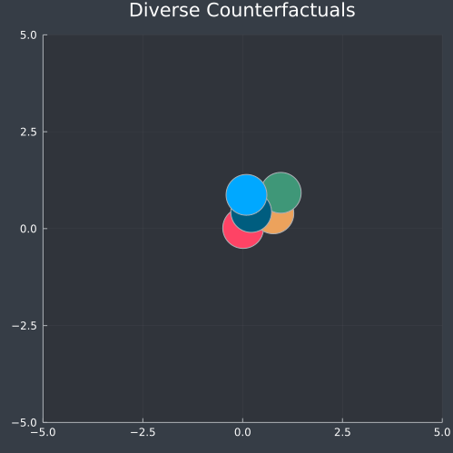
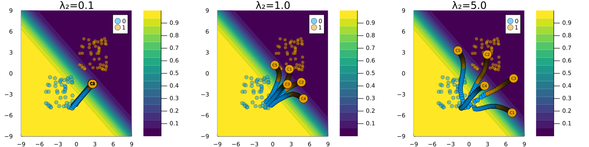

Diversity
Counterfactual Explanations are not unique and there are therefore many different ways through which valid counterfactuals can be generated. In the context of Algorithmic Recourse this can be leveraged to offer individuals not one, but possibly many different ways to change a negative outcome into a positive one. One might argue that it makes sense for those different options to be as diverse as possible. This idea is at the core of DiCE, a counterfactual generator introduce by Mothilal, Sharma, and Tan (2020) that generate a diverse set of counterfactual explanations.

Adding a diversity constraint
To ensure that the generates counterfactuals are diverse Mothilal, Sharma, and Tan (2020) add a diversity constraint to the counterfactual search objective. In particular, they define diversity in terms of …
We can implement this metric in Julia as follows:[1]
using LinearAlgebra
function ddp_diversity(X::AbstractArray{<:Real, 3})
xs = eachslice(X, dims = ndims(X))
K = [1/(1 + norm(x .- y)) for x in xs, y in xs]
return det(K)
endBelow we generate some random points in ℝ² and apply gradient ascent on this function evaluated at the whole array of points. As we can see in Figure 1, the points are sent away from each other. In other words, diversity across the array of points increases as we ascend the ddp_diversity function.
theme(:dark)
lims = 5
N = 5
X = rand(2,1,N)
T = 50
η = 0.1
anim = @animate for t in 1:T
X .+= gradient(ddp_diversity, X)[1]
Z = reshape(X,2,N)
scatter(
Z[1,:],Z[2,:],ms=25,
xlims=(-lims,lims),ylims=(-lims,lims),
label="",colour=1:N,
size=(500,500),
title="Diverse Counterfactuals"
)
end
gif(anim, joinpath(www_path, "dice_intro.gif"))
DiCE
Now let’s see how this concept carries over to our DiCEGenerator. Below we first load a simple synthetic data set and instantiate a linear classifier that perfectly separate the two classes.
# Some random data:
Random.seed!(1234)
N = 100
w = [1.0 1.0]# true coefficients
b = 0
xs, ys = toy_data_linear(N)
X = hcat(xs...)
counterfactual_data = CounterfactualData(X,ys')
M = LogisticModel(w, [b])
# Randomly selected factual:
Random.seed!(123)
x = select_factual(counterfactual_data,rand(1:size(X)[2]))
y = round(probs(M, x)[1])
target = ifelse(y==1.0,0.0,1.0) # opposite label as targetWe then use DiCE to generate multiple counterfactuals for varying degrees of λ₂, that is the hyperparameter that governs the strength of the penalty for non-diverse outcomes.
Λ₂ = [0.1, 1, 5]
counterfactuals = []
n_cf = 5
for λ₂ ∈ Λ₂
λ = [0.1, λ₂]
generator = DiCEGenerator(λ=λ; ϵ=1)
counterfactuals = vcat(
counterfactuals...,
generate_counterfactual(x, target, counterfactual_data, M, generator; num_counterfactuals=n_cf)
)
endFigure 2 shows the resulting counterfactual paths. As expected, the resulting counterfactuals are more dispersed across the feature domain for higher choices of λ₂
using CounterfactualExplanations.Counterfactuals: animate_path
theme(:wong)
T = 100
lim_ = 9
plts = []
for i ∈ 1:length(Λ₂)
λ₂ = Λ₂[i]
counterfactual = counterfactuals[i]
plt = plot(counterfactual, xlims=(-lim_,lim_), ylims=(-lim_,lim_), plot_up_to=T, title="λ₂=$(λ₂)")
plts = vcat(plts..., plt)
end
plt = plot(plts..., size=(1200,300), layout=(1,3))
savefig(plt, joinpath(www_path,"dice.png"))
References
Mothilal, Ramaravind K, Amit Sharma, and Chenhao Tan. 2020. “Explaining Machine Learning Classifiers Through Diverse Counterfactual Explanations.” In Proceedings of the 2020 Conference on Fairness, Accountability, and Transparency, 607–17.
[1] With thanks to the respondents on Discourse